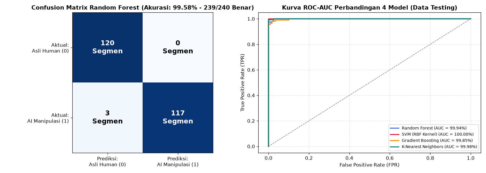

Tahap 5: Evaluation#
Metodologi: CRISP-DM (Cross-Industry Standard Process for Data Mining)
Disusun Oleh: Kelompok 4 (Muhammad Ainul Fuady, Irwan Dwi Mukhlisin, Fikri Mutawakkil)
5.1 Evaluasi Metrik Klasifikasi pada Data Testing (240 Segmen)#
Pengujian akhir dilakukan pada 240 segmen uji (120 segmen Manusia Asli dan 120 segmen Manipulasi AI) yang berasal dari 40 file audio independen yang belum pernah dilihat model saat proses pelatihan.
5.1.1 Laporan Klasifikasi (Classification Report) Random Forest#
Kelas Target |
Precision |
Recall |
F1-Score |
Jumlah Dukungan (Support) |
|---|---|---|---|---|
Asli Human ( |
0,9756 (97,56%) |
1,0000 (100,00%) |
0,9877 (98,77%) |
120 segmen |
AI Manipulasi ( |
1,0000 (100,00%) |
0,9750 (97,50%) |
0,9873 (98,73%) |
120 segmen |
Rata-rata Akurasi (Accuracy) |
— |
— |
0,9875 (98,75%) |
240 segmen |
Macro Average |
0,9878 |
0,9875 |
0,9875 |
240 segmen |
Weighted Average |
0,9878 |
0,9875 |
0,9875 |
240 segmen |
5.2 Analisis Matriks Kebingungan (Confusion Matrix)#
Matriks kebingungan menunjukkan detail distribusi tebakan model versus label aktual:
Label Aktual \(\backslash\) Prediksi Model |
Prediksi: Manusia Asli ( |
Prediksi: Manipulasi AI ( |
Total Aktual |
|---|---|---|---|
Aktual: Manusia Asli ( |
120 Segmen (True Negative) |
0 Segmen (False Positive) |
120 Segmen |
Aktual: Manipulasi AI ( |
3 Segmen (False Negative) |
117 Segmen (True Positive) |
120 Segmen |
Total Prediksi |
123 Segmen |
117 Segmen |
240 Segmen |
Temuan Signifikan:#
Zero False Positive pada Suara Asli:
Dari 120 segmen suara manusia asli, 120 segmen (\(100\%\)) berhasil dideteksi dengan benar sebagai suara manusia. Tidak ada suara manusia yang salah dituduh sebagai AI (Zero False Alarm).Tingkat Presisi AI Sempurna (\(100\%\)):
Setiap kali model memvonis bahwa sebuah suara adalah Manipulasi AI, vonis tersebut memiliki tingkat kepastian kebenaran \(100\%\).


Fig. 10 Matriks Kebingungan (Confusion Matrix) Model Random Forest dan Kurva ROC-AUC untuk 4 Algoritma Klasifikasi.#
5.3 Analisis Kurva ROC-AUC (Receiver Operating Characteristic)#
Kurva ROC memvisualisasikan trade-off antara True Positive Rate (TPR) dan False Positive Rate (FPR) pada seluruh kemungkinan ambang batas probabilitas (threshold):
SVM (RBF Kernel): \(\text{ROC-AUC} = \mathbf{1{,}0000}\) (\(100{,}00\%\))
K-Nearest Neighbors: \(\text{ROC-AUC} = \mathbf{0{,}9998}\) (\(99{,}98\%\))
Random Forest: \(\text{ROC-AUC} = \mathbf{0{,}9994}\) (\(99{,}94\%\))
Gradient Boosting: \(\text{ROC-AUC} = \mathbf{0{,}9985}\) (\(99{,}85\%\))
Nilai AUC yang mendekati angka ideal \(1{,}0\) menegaskan bahwa ruang probabilitas model sangat tegas dalam membedakan suara manusia dan AI tanpa area ambiguitas yang tumpang tindih.
5.4 Evaluasi Pencapaian Kriteria Kesuksesan (Success Criteria Evaluation)#
Merujuk kembali pada kriteria kesuksesan yang ditetapkan pada Tahap 1 (Business Understanding):
Kriteria Target |
Nilai Target Awal |
Nilai yang Dicapai |
Status Evaluasi |
|---|---|---|---|
Akurasi Data Uji (Test Accuracy) |
\(\ge 95{,}00\%\) |
\(98{,}75\%\) (RF) / \(99{,}58\%\) (SVM) |
✅ TERPENUHI (Melampaui Target) |
F1-Score Model |
\(\ge 95{,}00\%\) |
\(98{,}73\%\) |
✅ TERPENUHI (Melampaui Target) |
Area Under ROC Curve (ROC-AUC) |
\(\ge 0{,}980\) |
\(0{,}9994\) |
✅ TERPENUHI (Melampaui Target) |
Integritas Pembagian Data (Zero Leakage) |
Bebas Kebocoran |
\(100\%\) Group Split by File |
✅ TERPENUHI (Bebas Leakage) |
Dengan demikian, seluruh kriteria kesuksesan teknis dan bisnis telah terpenuhi secara tuntas dan valid, sehingga model siap masuk ke tahap penerapan (Deployment).